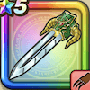

ドラゴンキラー
攻略班 7.5点 / まわしげりドラゴンネイル滅竜のかまえバーニングファング邪竜氷葬撃逆鱗
くわしい特徴
【レベル別習得スキル】 Lv1【バトマス】攻撃力+5 Lv1まわしげり（消費MP：8）足で周囲をなぎはらい敵全体に威力110%の体技ダメージを与える Lv10ドラゴンネイル（消費MP：5）ドラゴン系に威力200%それ以外の系統は130%の斬撃ダメージを与える Lv15滅竜のかまえ（消費MP：最大MPの15%）自分の攻撃力を1段階上げ、ドラゴン系へのダメージと耐性を上げ、ターン開始時にHPが一定量回復する Lv20バーニングファング（消費MP：29）敵全体に威力250%のメラ属性体技ダメージを与え、まれにブレス攻撃の威力を1段階下げる Lv30邪竜氷葬撃（消費MP：35）敵1体に威力520%のヒャド属性体技ダメージを与え、まれに自分の守備力を1段階上げる。あるいはごくまれに自分の攻撃力を1段階上げる Lv35ドラゴン系へのダメージ+5% Lv40ドラゴン系へのダメージ+5% Lv45攻撃力+12 Lv50逆鱗（消費MP：12）戦闘開始時に構えを取り、敵から斬撃・体技ダメージを受けたとき、強烈な通常攻撃でカウンターを行う(効果3ターン) 【限界突破スキル】 1凸スキルの斬撃・体技ダメージ+5% 2凸スキルの斬撃・体技ダメージ+5% 3凸スキルの斬撃・体技ダメージ+5% 4凸スキルの斬撃・体技ダメージ+5%